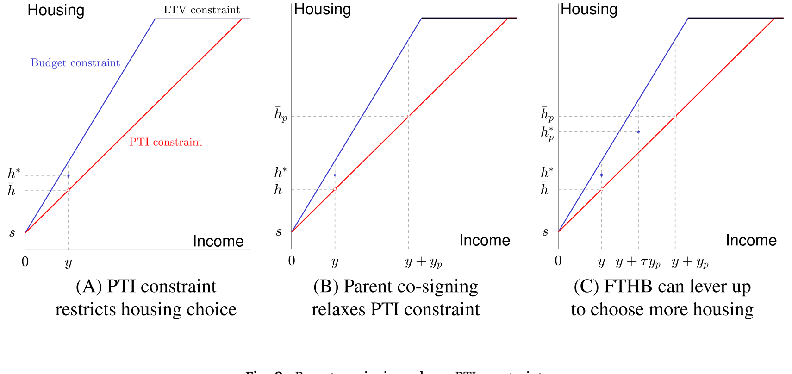
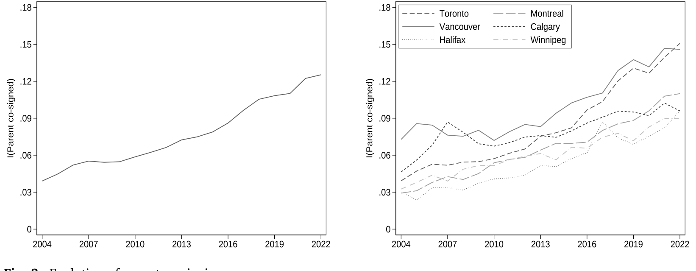
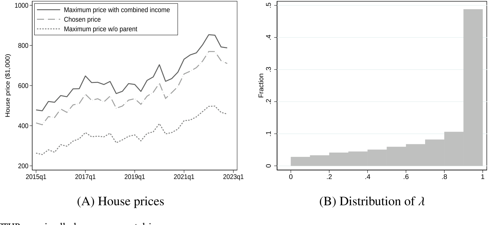
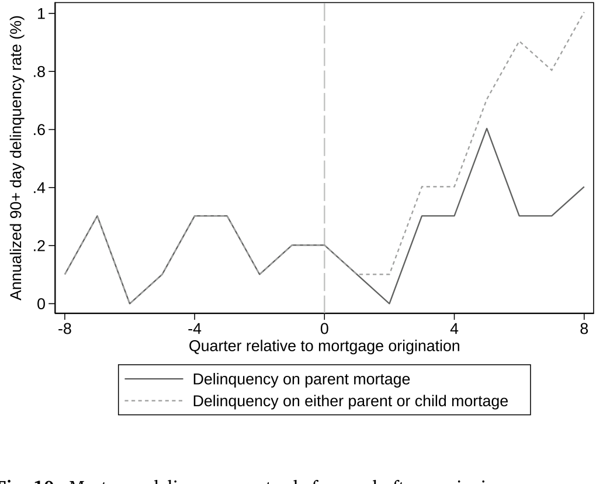
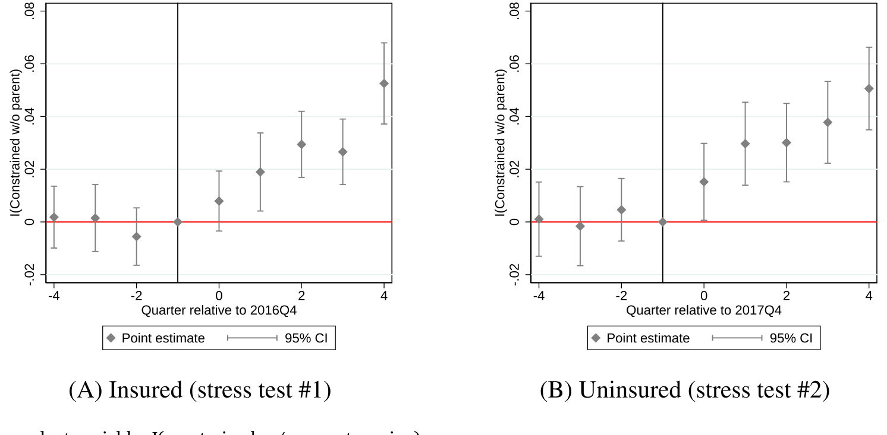
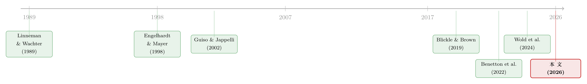

把爸妈的收入也算进按揭：一纸「共签」，如何同时打开和收紧一扇门
本文读的是 Allen, Carmichael, Clark, Li & Vincent (2026, Journal of Financial Economics)：用加拿大贷款级数据，作者发现首次购房者越来越依赖父母「共签」按揭来过收入关——父母收入一旦并入申请，孩子能借的钱、能买的房瞬间放大。好消息是，这帮年轻人因此能提早五年进场、买上更贵的房；坏消息是，他们会把这份额外的借款能力用到极限，买下只有「父母+自己」两份收入合起来才供得起的房子，于是两代人都被掏空了流动性缓冲，违约风险随之上升。一张「共签」的纸，既松了约束，也埋了雷。
1 引言：一个被反复讲过的故事，和一个没被讲过的转折
过去二十年，发达国家的房价像脱缰一样把收入甩在身后。年轻人买不起房，这件事本身已经被讲烂了。于是「父母帮一把」成了一个温情脉脉的注脚——给个首付、塞笔钱、甚至从自己房子里套点现金出来贴给孩子。文献里这条线索很清楚：拿到家里转移支付的首次购房者 (first-time home-buyers, FTHB) 会更早进场、买更大的房（Engelhardt and Mayer, 1998；Guiso and Jappelli, 2002）；家庭内部财富转移会显著抬高年轻人的自有住房率（Blickle and Brown, 2019；Wold et al., 2024）。
到这里，故事似乎就该结束了：父母有钱，孩子受益，皆大欢喜。
但真正关键的一步在于——父母帮孩子，未必靠「掏钱」。本文作者盯住了一个被前人几乎忽略的渠道：父母可以不出一分钱首付，只是在孩子的按揭合同上签个字，做「共签人」(co-signer)。这一签，父母在法律上对这笔贷款负连带责任，于是银行在算「这家人能借多少」的时候，就把父母的收入也加了进去。结果不是首付变多，而是合格收入 (qualifying income) 变大——这恰恰能撬开另一道、也是更隐蔽的一道闸门：收入约束。
更妙（也更危险）的转折是：当借款能力凭空多出一截，孩子会怎么用它？是只补到「自己本来就够得着」的那个房子，还是顺势加杠杆、买下一套靠两份收入才供得起的更贵的房？本文的答案是后者——而这，正是一个全新的、会增加借款人脆弱性的渠道。
一句话抓住全文的张力：父母共签放松的是收入约束 (PTI)，不是首付约束 (LTV)；而放松收入约束的副作用，是诱使孩子把杠杆加满。
2 制度背景：在加拿大，「能不能借」是怎么被算出来的
要理解共签的威力，得先看清加拿大购房者要过的两道关。
第一道是首付关，也就是贷款价值比 (loan-to-value, LTV) 约束：LTV 最高不得超过 95%；一旦超过 80%，按揭就必须买保险来保护放款人。这道关，靠的是「钱」——首付越多，LTV 越低。父母给现金、给赠与，主要松的是这道关。
第二道是收入关，也就是偿付收入比 (payment-to-income, PTI) 约束（文献里也叫债务收入比 DTI）。加拿大用两个比率来卡：毛偿债比 (gross debt service, GDS) 和总偿债比 (total debt service, TDS)，定义如下：
$$ \mathrm{GDS} \equiv \frac{\text{mortgage payment} + \text{property taxes} + \text{heating costs} + 50\%\ \text{of condo fee}}{\text{gross qualifying income}} $$
$$ \mathrm{TDS} \equiv \frac{\text{all payments in GDS} + \text{payments on other debt obligations}}{\text{gross qualifying income}} $$
这里的分母——「毛合格收入」(gross qualifying income)——是关键：它等于所有在法律上对这笔按揭负责的人的税前收入之和。样本期内，GDS 和 TDS 的上限大致是 39% 和 44%。换句话说，月供（连同房产税、取暖费等）不能超过合格收入的 39%。
现在，父母共签的逻辑就一目了然了：父母一签字，他们的收入进了分母，GDS/TDS 瞬间下降，孩子能扛的月供、能借的本金随之放大。这比「给首付」往往更有效——尤其是当父母收入不低、但手头没那么多现钱去凑一笔赠与的时候。
（顺带一提，按揭还有一道最低信用分的门槛：2020 年 6 月前是 620 分，之后提到 680 分，合同里至少要有一人达标。父母也能靠共签帮孩子过这道分数关，但作者发现这在经验上是次要的。）
3 一个简单框架：共签如何「抬起」收入约束线
作者没有一上来就堆模型，而是先用一张图把直觉讲透。设一个准购房者收入为 \(y\)、储蓄为 \(s\)，把单位房价标准化为 1。
在没有按揭的世界里，能买的房子由储蓄 \(s\) 决定。一旦能借按揭，给定利率和摊还期，最大贷款额（从而最大住房）就成了收入的线性递增函数——这是图 2(A) 里那条向上的蓝线，直到被 LTV 约束顶住为止。作者假设 \(s\) 足够高，让 LTV 不在相关区间内绑定，从而把注意力集中在收入这道关上。
接着引入 PTI 约束 \(\delta\)：月供不能超过 \(\delta y\)。这条（红色）约束线同样随收入递增，但更平——它给出在收入约束下能买的最大住房 \(\bar{h}\)。如果购房者真正想要的住房 \(h^\ast\) 超过了 \(\bar{h}\)，那么收入关就绑定了，他被迫降级。

Figure 2: Parent co-signing relaxes PTI constraint
但真正关键的一步在于：购房者可以请父母共签，把父母收入 \(y_p\) 加进申请。于是 PTI 约束下能买的最大住房从 \(\bar{h}\) 抬到 \(\bar{h}_p\)（图 2(B)）。这条线被整体「抬起」了——原先够不着的房子，现在够得着了。
然后，一个自然的问题是：孩子会停在哪里？如果父母只是帮忙过线、并不真的贴钱供月供，孩子最优仍然会选 \(h^\ast\)（无 PTI 约束时的最优）。但如果父母还承诺补贴一部分收入 \(\tau y_p\) 去帮还月供，孩子就会重新优化、偏好更多的住房 \(h_p^\ast > h^\ast\)（图 2(C)）。也就是说，父母的潜在收入支持，会诱使孩子把房子越买越大。
为了把「加杠杆加到什么程度」量化出来，作者定义了一个核心变量 \(\lambda\)：
\(\lambda\) 的读法很直观：当孩子完全加满杠杆、买到「父母+自己」合并收入能撑起的最大住房时，\(\lambda = 1\)；当孩子其实自己就供得起、根本不需要父母时，\(\lambda = 0\)。介于其间，则衡量他把那段「凭空多出来的借款能力」用掉了多少。这个 \(\lambda\)，就是后文检验「孩子到底有没有过度加杠杆」的尺子。
框架的三个要点：第一，PTI 会阻止借款人买到想要的房；第二，对受约束的人，父母共签能放松这道约束；第三，父母收入支持的可能性，会诱使孩子加杠杆、买更贵的房（更高的 \(\lambda\)）。后两点，一正一负，构成了全文的核心张力。
4 数据：把父母和孩子，一笔笔对上
作者用的是加拿大的贷款级 (loan-level) 按揭数据，并链接到征信局 (credit bureau) 数据。这套数据的稀缺之处在于：它能把同一笔按揭上的父母和孩子对应起来——既知道谁是首次购房者、谁是共签人，又知道双方的收入、债务、信用分，还能跟踪贷后表现（是否违约、是否搬家）。正是这种「能区分共签人到底是父母、还是配偶/朋友/投资人」的颗粒度，让本文得以聚焦在「父母共签」这一支上，而不像以往研究那样把各种共签混在一起。
凭着这套数据，作者先摆出一组新事实。最醒目的一条：父母共签在首次购房按揭中的比例，从 2004 年的 4% 一路涨到 2022 年的 13%——几乎与房价同步攀升。

Figure 3: Evolution of parent co-signing
进一步，有父母共签的孩子，进入市场的年龄要年轻五岁，买的房子要贵 7%。他们似乎还买到了更「合身」的房——购房三年内搬家的概率更低。光看这些，共签简直是房价高企时代的一剂良药。
5 主要结果：把父母从合同上「抹掉」会发生什么
但作者要回答的真正问题是因果性的：父母共签导致了什么？于是他们做了一组反事实 (counterfactual) 练习——把父母的收入、债务、信用分从已共签的按揭申请里移除，看孩子还能不能独立通过资格审查。
这里有个数据上的麻烦：合同没记录收入在父母和孩子之间如何分摊。作者于是做了保守假设——假设孩子的收入和父母一样高（按加拿大统计局的生命周期收入曲线，这其实高估了年轻人的收入，因而是偏保守的），并对收入分摊做稳健性检验。
结果相当震撼：没有父母共签，样本里 74% 的孩子根本通不过自己那笔按揭的资格审查。 把视线聚焦到这批「受约束」的购房者，作者再问：他们当初买的那套房，若没有父母，得便宜多少才供得起？答案是——在首付固定的假设下，购买价格得低 37%，因为合格按揭额一下子缩水了。
那么，他们是不是把多出来的借款能力用到了极限？是的。作者发现，受约束、且与父母共签的孩子，普遍把房子买到了「父母+自己合并收入」能撑起的最大值附近——也就是 \(\lambda\) 紧贴 1。

Figure 8: Constrained FTHBs maximally leverage parental income
这就回到了框架里那个危险的转折：额外的借款能力，本可以拿来降低风险（多一份收入、多一层缓冲），结果却被悉数转化成了更大的房、更高的月供。于是这套更贵的房，需要父母和孩子两份收入一起供才还得动。两代人的流动性缓冲都被抽干了。
有人会担心：会不会是「本来就更激进、更想买大房」的人才去找父母共签？也就是选择偏误 (selection on unobservables)。作者承认这个隐忧，并把它留给了第 7 节的准实验来处理。
6 新渠道：松开的约束，如何变成贷后的违约
如果两代人都把流动性用到了极限，那么一旦遇上负向冲击，谁来兜底？这正是本文最具原创性的论点——父母支持可能增加而非降低借款人的脆弱性。
数据支持了这个担忧。控制了贷前信用表现和其他可观测特征之后，共签借款人在贷后违约率的上升幅度显著大于非共签借款人。而且这一效应主要由「涉及受约束购房者的共签按揭」驱动——恰恰是那些被诱导着加满杠杆的人。

Figure 10: Mortgage delinquency rates before and after co-signing
这是个反直觉的结果，值得停下来想一想。直觉上，一笔按揭上多一个收入来源、多一个负责人，违约风险应该下降才对（事实上，用美国数据的 Tzioumis (2017)、Jakucionyte and Singh (2022)、Goodman and Zhu (2023) 都发现共签与违约/止赎呈负相关）。本文的反转在于：那些研究把各种共签混在了一起，而当你只看父母共签、并意识到它放松的是收入约束、进而诱发加杠杆时，符号就可能翻过来。共签不再是「多一道保险」，而是「多借一截、刚好借到供不动的边缘」。
7 识别：用「压力测试」把人推去共签
潜在结果框架建立了「共签 → 更贵的房 → 更大的压力」这条链，但选择偏误的幽灵还没散去：会不会有某种看不见的借款人特质，同时决定了「去共签」和「买大房」？
要正面回应，理想的做法是找一个外生冲击，把一部分本来不会共签的人推去共签，再看他们的住房/违约结果是否与「本来就会共签」的人不同。如果被冲击推来的这批人和原有共签者没什么两样，那么未观测混淆就不那么可怕了。
作者找到的外生变化，是加拿大 2016 年和 2018 年两次收紧 PTI 要求的宏观审慎监管改革——也就是著名的「按揭压力测试」(mortgage stress tests)。压力测试抬高了资格审查中使用的利率，等价于收紧了 PTI 约束，于是把更多本就接近借款上限的购房者挤向了共签。
识别策略是一个双重差分 (difference-in-differences, DiD)：把借款人按「离借款约束的远近」分成处理组（更可能贴着约束）和控制组（更可能离约束很远）。结果显示，压力测试之后，贴着约束的那组里，与父母共签的比例显著上升——也就是说，政策外生地改变了共签者的构成。

Figure 11: Event study—Dependent variable: I(constrained w/o parent co-sign)
关键的下一步是：这种构成变化，会不会改变「共签 → 住房/违约」的效应？作者发现不会——被政策推来的共签者，其住房和违约结果与原有共签者并无系统差异。这就大大缓解了「选择于不可观测变量」的担忧，反过来支持了父母共签对住房选择与违约的因果解读。
8 文献脉络
这条研究的根，扎在「借贷约束如何决定从租到买的跃迁」这个老问题上。Linneman and Wachter (1989) 与 Ortalo-Magné and Rady (2006) 论证了收入与财富约束在自有住房决策中的分量。

接着，一支文献专注于「家庭内部转移如何帮孩子跨过门槛」：Engelhardt and Mayer (1998) 发现拿到转移的购房者会提前九个月买房；Guiso and Jappelli (2002) 用意大利数据发现转移让人更早买更大的房；Blickle and Brown (2019) 用瑞士面板发现家庭内转移把「从租到买」的倾向抬高了 35%；Wold et al. (2024) 在挪威发现父母更富的家庭、孩子到 30 岁更可能是房主，且买房时杠杆更高、房子更贵。再往后，Benetton et al. (2022) 用美国数据发现父母会在孩子买房前从自家房子里套现，暗示他们在「再加杠杆」去帮孩子。
但以上几乎都聚焦在「转移/赠与」这条出钱的路。本文的位置，恰在这条脉络的一个空白处：它把镜头对准了「不出钱、只签字」的共签渠道，第一次系统地刻画了父母共签如何放松 PTI 约束，又如何反过来通过诱导加杠杆、抬高了贷后的脆弱性。它既接续了「代际支持促进自有住房」的乐观叙事，又给这个叙事补上了一个此前缺席的、令人不安的反面。
（关于「房价如何被各种力量推高」，可参见《偷来的钱，会去买房》；关于「在买不起整套房时，年轻人还有什么别的进场方式」，可参见《半套房子：当「租还是买」不再是单选题》。）
9 评论与延伸（Q&A + 研究方向）
(a) 几个可能的疑问
Q：共签和「父母给首付/赠与」到底有什么本质区别？
区别在于松的是哪道关。赠与/给首付增加的是储蓄，松的是 LTV（首付）约束；共签把父母收入并入分母，松的是 PTI（收入）约束。后者的副作用更隐蔽：它不增加家庭净资产，却直接放大了「能借多少」，因此更容易诱导加杠杆。而且当父母手头没现金、但收入不低时，共签往往是唯一可行的帮法。
Q：「74% 通不过」和「价格要低 37%」会不会是保守假设堆出来的人为数字？
作者的假设方向恰恰是反着的——他们假设孩子收入和父母一样高，而按生命周期收入曲线，25–34 岁的中位收入其实低于 55–64 岁，所以真实情况下孩子更供不起。也就是说，74% 和 37% 很可能是下限。稳健性检验里换了不同的收入分摊假设，结论依然成立。
Q：违约率上升，会不会只是因为共签的人本来信用就差？
这正是作者要排除的。他们控制了贷前信用表现和其他可观测特征后，共签者贷后违约的增量仍更大；而且效应集中在「受约束」的共签者身上，与「加满杠杆」的机制吻合。更进一步，压力测试这个外生冲击推来的共签者，结果与原有共签者无异，说明并非单纯的人群选择在作怪。
Q：为什么美国的研究普遍发现共签降低违约，本文却相反？
因为口径不同。美国那些研究（Tzioumis, 2017；Jakucionyte and Singh, 2022；Goodman and Zhu, 2023）把所有类型的共签——同伴、家庭、投资人——混在一起，得到的是一个被平均掉的负相关。本文有「父母↔孩子」的精确链接，能单独看父母共签，并识别出「放松收入约束→加杠杆」这条会推高违约的特定机制。颗粒度，决定了符号。
Q：压力测试这个工具，外生性可信吗？
它是 2016/2018 全国性的宏观审慎规则变更，对单个借款人而言是外生的。DiD 的识别逻辑不是「压力测试影响了违约」，而是「压力测试改变了共签者的构成」——把更多贴着约束的人挤进共签。而作者证明这种构成变化不改变共签的效应，从而把选择偏误的担忧关上了门。需要相信的核心假设是处理组/控制组的平行趋势，以及「离约束远近」这个分组的合理性。
Q：父母自己呢？他们共签后会不会也陷入危险？
会，而且这正是「脆弱性」渠道的另一半。作者指出，共签买下的更贵的房，需要父母和孩子两份收入一起供，因此父母也被绑上了月供、流动性缓冲被削薄。文中也提到，共签的父母里有一部分财务稳健，但很多并不。两代人一起加杠杆，意味着一个负向冲击可能同时击穿两代人的缓冲。
(b) 几个可能的研究问题与提案
1. 共签的「代际脆弱性」会不会外溢到信用市场的其他角落？
【经济故事】父母为孩子共签后，自己的资产负债表被占用、流动性下降，可能影响他们自己的消费、再融资乃至养老储备。若大量临近退休的父母都在共签，这是一种隐性的、跨代的系统性风险积累。 【可行性】中。需要把父母的全量征信/消费轨迹接到共签事件上做事件研究。本文数据已链接征信局，若能延展到父母侧的其他账户，是 doable 的；难点在父母身份的稳定识别。
2. 把「共签→加杠杆→违约」这条链搬到公司债/信用市场，看「连带担保」是否有同构效应。
【经济故事】企业层面的「共签」对应的是母公司担保、交叉担保或集团内连带责任。一个自然的猜想是：被集团担保「松了约束」的子公司，会不会也倾向于把杠杆加到集团合并资产负债表能撑起的极限，从而抬高整体信用风险？这与本文「合并收入诱导加杠杆」的机制同构。 【可行性】中。需要债券/贷款合同里的担保结构（如 Mergent FISD 的担保标识、贷款合同的 guarantor 字段）配合发行人财务数据。识别上可借鉴本文思路，找一次外生收紧担保认定的监管变更做 DiD。
3. 当外资或机构投资者成为「隐性共签人」，住房或信用资产的杠杆会怎样变化？
【经济故事】把「共签人」抽象成「能提供额外偿付能力背书的第三方」，外资持有人/机构对某类资产的进入，可能扮演类似角色——放松了边际借款人的约束，诱导整体杠杆上行，并在外资撤离时放大脆弱性。 【可行性】低到中。难在如何把「背书」量化、以及找到外生进入/退出的冲击；若能锚定某次资本流动管制变更作为外生事件，则有戏。
4. 共签是否改变了房价本身？——总量反馈效应。
【经济故事】如果共签系统性地抬高了一大批边际购房者的支付能力，它可能不只是改变「谁买得起」，还会通过需求侧把房价进一步推高，形成「共签→更高房价→更需要共签」的自我强化循环。 【可行性】中。需要地区层面的共签渗透率与房价的面板，识别上要处理反向因果——可用压力测试在不同地区的差异化冲击作为工具变量。
参考文献
- Acolin, A., Bricker, J., Calem, P., Wachter, S. (2016). Borrowing constraints and homeownership. American Economic Review 106(5), 625–629.
- Allen, J., Carmichael, K., Clark, R., Li, S., Vincent, N. (2026). Housing affordability and parental income support: The role of mortgage co-signing. Journal of Financial Economics 178, 104239.
- Benetton, M., Kudlyak, M., Mondragon, J. (2022). Dynastic home equity. Mimeo.
- Blickle, K., Brown, M. (2019). Borrowing constraints, home ownership and housing choice: Evidence from intra-family wealth transfers. Journal of Money, Credit and Banking 51(2–3), 539–580.
- Engelhardt, G., Mayer, C. (1998). [Intergenerational transfers and first-time homebuying]. (As cited in Allen et al., 2026.)
- Goodman, L., Zhu, J. (2023). Single borrowers versus coborrowers in the pandemic: Mortgage forbearance take-up and performance. Journal of Housing Economics 59(B), 101909.
- Guiso, L., Jappelli, T. (2002). Private transfers, borrowing constraints and the timing of homeownership. Journal of Money, Credit and Banking 34(2), 315–339.
- Jakucionyte, E., Singh, S. (2022). Bowling alone, buying alone: The decline of co-borrowers in the US mortgage market. Journal of Housing Economics 58(B), 101876.
- Lee, H., Myers, D., Painter, G., Thunell, J., Zissimopoulos, J. (2020). The role of parental financial assistance in the transition to homeownership by young adults. Journal of Housing Economics 47, 101597.
- Linneman, P., Wachter, S. (1989). The impacts of borrowing constraints on homeownership. Real Estate Economics 17(4), 389–402.
- Ortalo-Magné, F., Rady, S. (2006). Housing market dynamics: On the contribution of income shocks and credit constraints. Review of Economic Studies 73(2), 459–485.
- Tzioumis, K. (2017). Mortgage (mis)pricing: The case of co-borrowers. Journal of Urban Economics 99, 79–93.
- Wold, E., Aastveit, K., Brandsaas, E., Juelsrud, R., Natvik, G. (2024). The housing channel of intergenerational wealth persistence. Mimeo.